On the reader's page


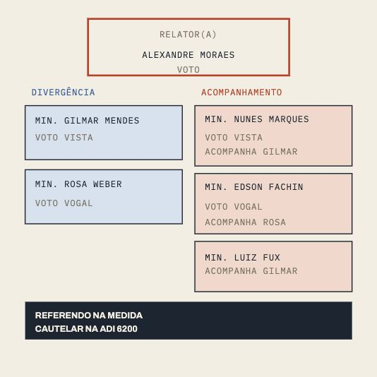
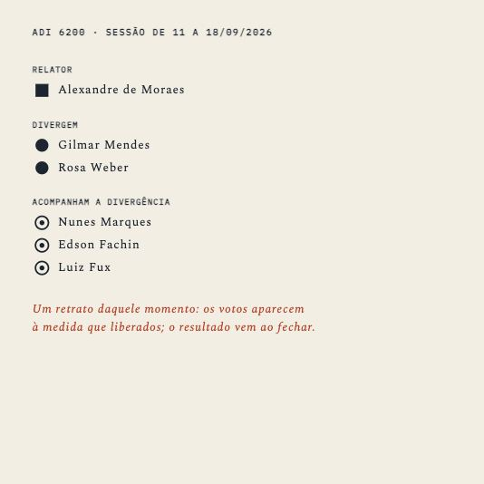
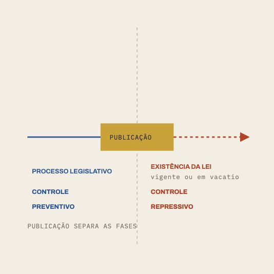
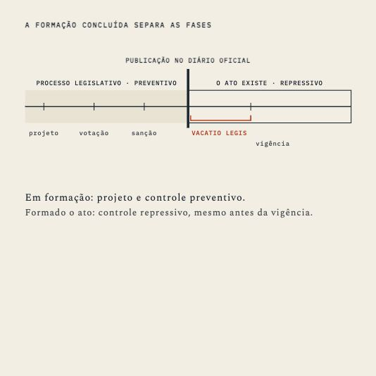


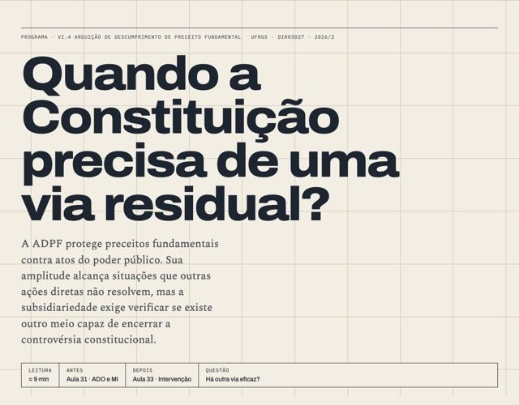
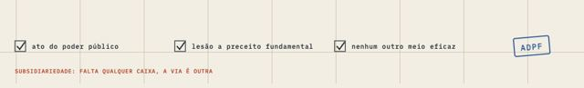
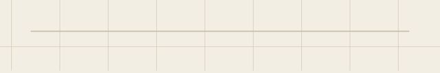
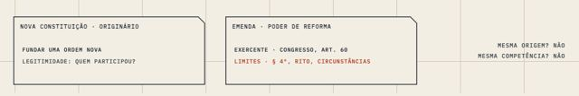
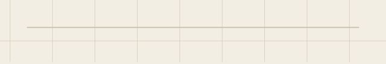
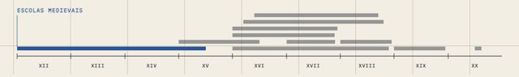
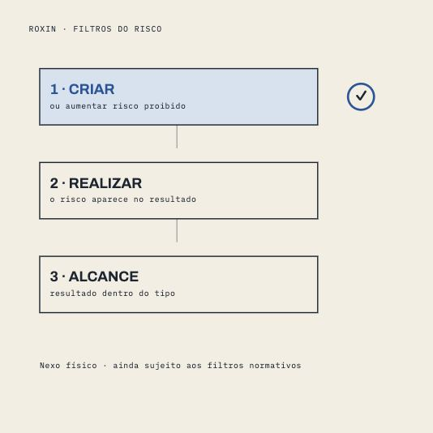
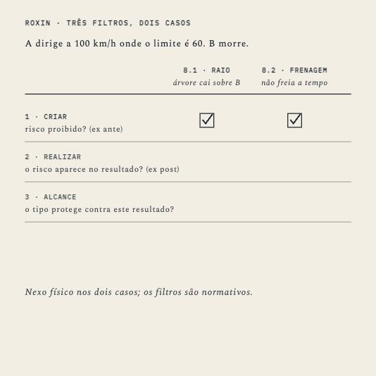
New backstage


The line
- #127Source Pipeline 2.1: legacy triage, carriers, the answer rule, figure families and floors.
- #104Processo: six lessons rebuilt, eight get a prose pass, then a blind read.
- #108Prose floors only on pages whose prose changed.
- #213New CI check: a tag inside a drawing breaks the page; now it fails the build.
- queue≈890 fixes, worst first; Codex takes its rows when idle.
- specsDelito figures and Contratos party colour handed to Codex.
Yours to pick
- Lesson titles on one line: examples coming.
- The home page's Controle card still draws concentrado / difuso in orange / blue: redraw or keep?
- The highlighter is orange, and orange means the limit: keep or change?
- Metodologia 10–13 have no texts on disk.
- The P1 date for the Processo card.